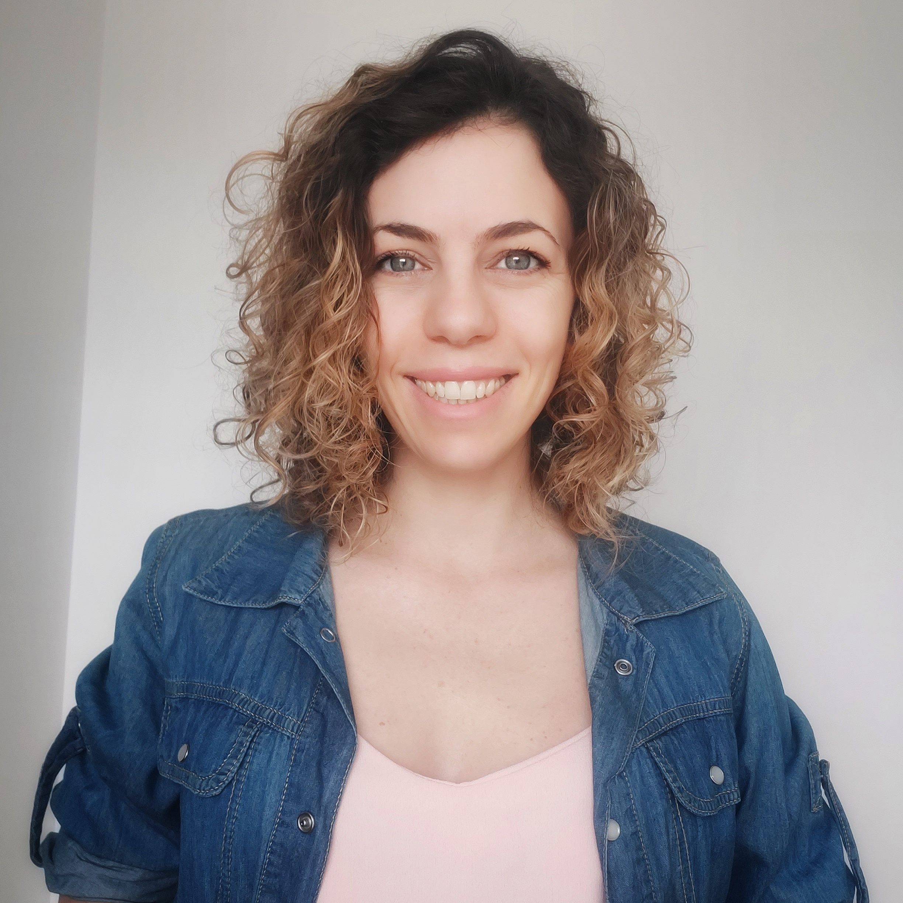
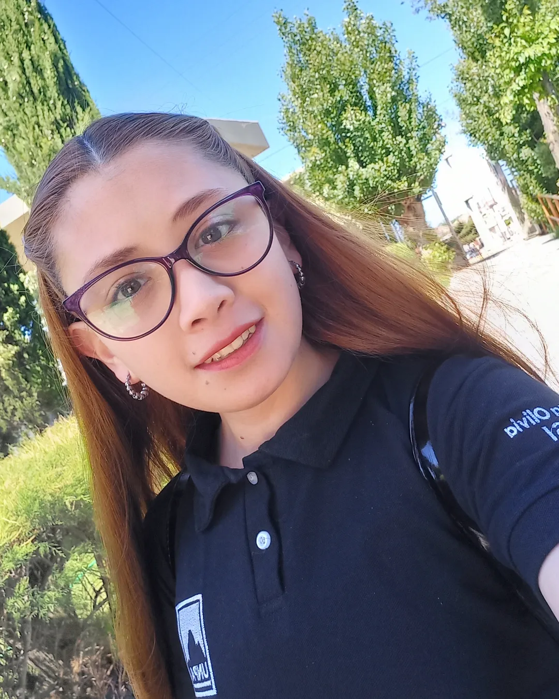
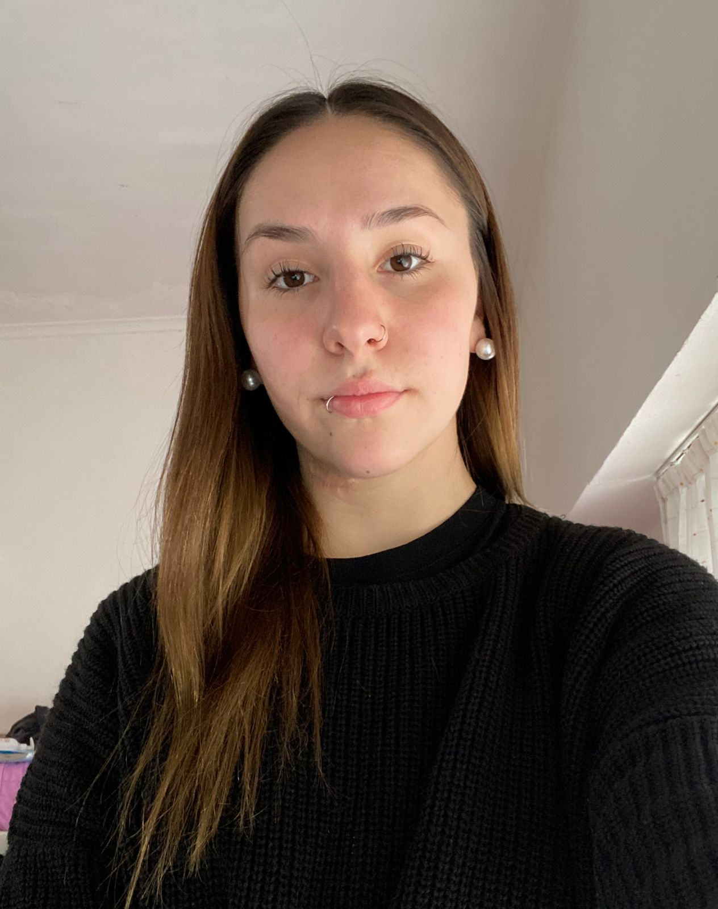

QUIÉNES SOMOS
Somos una ONG de la ciudad de La Plata creada en 2023, que trabaja por el bienestar de los animales. Colaboramos en caso de que se extravíen, para que vuelvan rápidamente a sus hogares. Además, difundimos las posibilidades de adopción de los refugios de la región y compartimos actividades de interés general.

Fernanda Germanier

Melany Ernalz

Aneta Sanchez
Agustina Mahli
Ayelén Sanchez
Nuestra misión
Rescatar y reubicar perros y gatos abandonados, en situación de calle, en peligro y maltratados, además de fomentar la tenencia responsable.
Nuestra visión
Nuestra ONG será reconocida a nivel local por el trabajo de ayudar a los animales en estado de vulnerabilidad.
Nuestros objetivos
- - Rescatar perros y gatos en estado de vulnerabilidad.
- - Proporcionar un espacio digno durante su reubicación.
- - Promover la adopción.
- - Hacer campañas de concientización de tenencia responsable.
- - Fomentar el cuidado y respeto a los animales.
- - Encontrarles un lugar seguro.
- - Darles afecto.